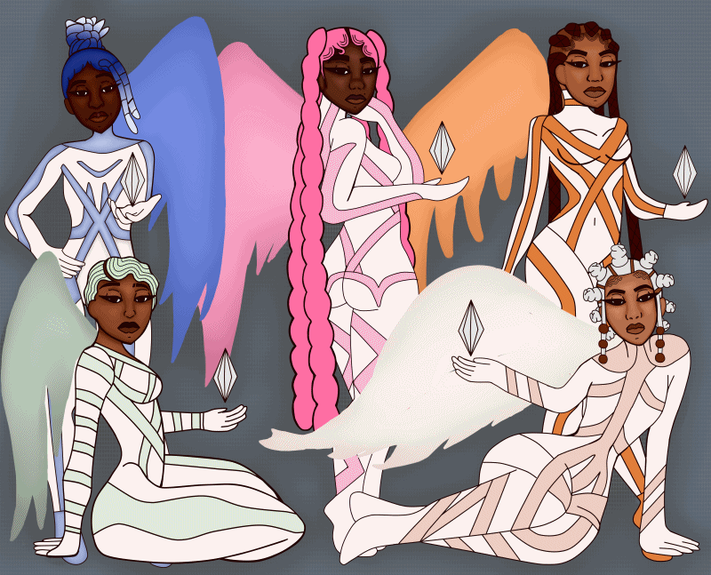

Raven, Countess, Aaliyah, Kennedy, and Mahaogany are 5 girls who are fated with the role of becoming magical girls known as maidens. Each girl possess a power unique to them. As maidens it is their job to defeat owl like creatures known as the Saul's and cleanse the Ginkgo tree to protect the world. "Meraki" means to put a part of yourself into your work: Soul, Creativity, and Love. Sin is an acronym for Saul Intrusive Neutralization. On the first day of school, the school visits the notable Ginkgo tree as a field trip. When the girls all touch the tree, they are transported inside of it and meet a mysterious being who tells them of their destiny. The girls must defeat an evil entity known as Férmitío who has mission is to destroy the Ginkgo tree and ultimately end the world. As the girls grow and come to understand their powers, they may realize that not everything is what is seems.
